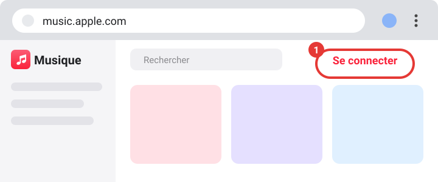
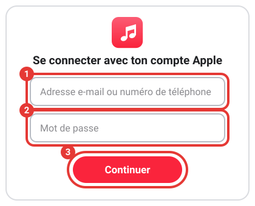
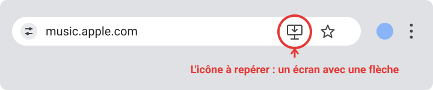
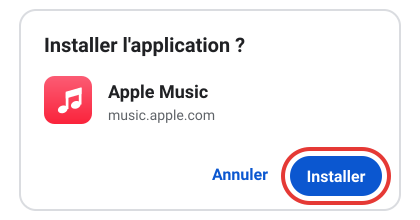
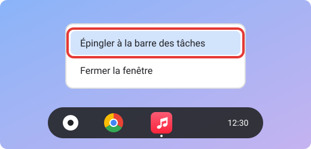

Utiliser Apple Music dans le navigateur
Écoute Apple Music directement dans ton navigateur, sans rien installer, et installe même l'app. Suis les étapes dans l'ordre : les cadres rouges numérotés sur les images montrent où cliquer.
-
Ouvre Apple Music
Clique sur le bouton ci-dessous : Apple Music s'ouvre dans un nouvel onglet.
Ouvrir Apple Music -
Clique sur « Se connecter »
En haut à droite de la page, clique sur « Se connecter » (cadre rouge n°1).

-
Entre ton compte Apple
Une fenêtre s'ouvre. Écris ton adresse e-mail Apple (cadre n°1), puis ton mot de passe (cadre n°2), et clique sur « Continuer » (cadre n°3).

Apple peut aussi t'envoyer un code à 6 chiffres sur un autre appareil Apple ou par SMS : écris-le quand la page le demande.
Tu n'as pas encore de compte Apple ? Clique sur le lien pour en créer un gratuitement : account.apple.com.
-
Choisis ta musique
Utilise la barre « Rechercher » en haut de la page pour trouver un titre, un album ou un artiste, puis clique dessus pour l'écouter. Ta bibliothèque et tes playlists sont dans la colonne de gauche.
Pour écouter les titres en entier, il faut un abonnement Apple Music (un essai gratuit est parfois proposé). Sans abonnement, tu peux parcourir le catalogue, mais pas tout écouter. Si l'abonnement n'est pas à toi, demande l'accord de la personne qui paie. Sur un ordinateur qui n'est pas le tien, déconnecte-toi à la fin : clique sur ton nom en haut à droite, puis sur « Se déconnecter ».
Bonus : installer Apple Music comme une vraie application Chrome et Chrome OS
Sur Chrome (ordinateur ou Chromebook), tu peux transformer Apple Music en application : elle s'ouvre dans sa propre fenêtre, avec son icône. À faire seulement sur ton propre appareil.
-
Ouvre Apple Music dans Chrome
Sur ton Chromebook ou ton ordinateur, ouvre le navigateur Google Chrome, va sur music.apple.com et connecte-toi.
-
Repère l'icône d'installation
Tout à droite de la barre d'adresse (là où il y a « music.apple.com »), cherche cette icône : un petit écran d'ordinateur avec une flèche vers le bas.

Tu ne la vois pas ? Attends quelques secondes, ou ouvre le menu (les trois points en haut à droite de Chrome, cadre n°1), puis « Diffuser, enregistrer et partager », puis « Installer la page en tant qu'application… » (le nom peut varier selon ta version). Si cette ligne n'existe pas, choisis plutôt « Créer un raccourci… » et coche « Ouvrir dans une fenêtre » : le résultat est le même pour la suite.

-
Clique sur l'icône, puis sur « Installer »
Une petite fenêtre s'ouvre : clique sur le bouton bleu « Installer ».

Si Apple Music est déjà installé, l'icône affiche « Ouvrir dans l'application » : clique dessus pour l'ouvrir.
-
Apple Music s'ouvre dans sa propre fenêtre
Sa petite icône rouge apparaît dans la barre des tâches, la barre qui se trouve en bas de l'écran.
-
Épingle l'application à la barre des tâches
Fais un clic droit (ou touche le pavé tactile avec deux doigts) sur l'icône Apple Music dans la barre des tâches, puis clique sur « Épingler à la barre des tâches ».

Tu pourras ouvrir Apple Music en un clic, sans passer par Chrome.